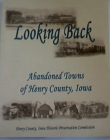
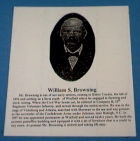

Scroll down to order print. $30.00, plus postage.
Museum Gift Shop
Scroll down to order print. $30.00,
plus postage.
|
|
Crooked Creek Ornament..................$9.00 |
|
|
JKeychain Viewer of Old Depot.................$4.00 |
|
|
WHS Mug............................................$4.00 |
|
|
Winfield Historical Society Pen.................$3.00 |
|
|
WHS Paddle Ball..................................$2.00 |
BOOKS:
|
Winfield Community Cookbook 2004, 8.5" x 5.5" spiral, 400 pages, includes local photos, etc. |
...........................$5.00 | |
|
 |
Looking Back, Abandoned Towns of Henry County OUT OF STOCK |
..........................$26.00 |
|
Unincorporated Towns of Henry County OUT OF STOCK |
..........................$26.00 | |
|
Our Hundredth Anniversary 1981, The Winfield Beacon, Winfield, Iowa 11.5" x 9" HC, 121 pages, comprehensive history of Winfield |
..........................$25.00 | |
|
Early History of Winfield, by William D. Klopfenstein, 9" x 12" SC, 22 pages, excerpts from the Courier and the Winfield Beacon 1876 - 1923 |
...........................$8.00 | |
|
Winfield Today 1915, by William D. Klopfenstein, 9" x 12" SC, 29 pages, excerpts from the Burlington Hawk Eye, The Winfield Beacon, includes Lorenzo C. Denslow autobiography, John M. Lindly Memories, and Winfield Brick & Tile Works |
...........................$8.00 | |
|
Henry County, Iowa, Plat Book of the Original Land Entries 1838-1854, by William D. Klopenstein 8" x 11" spiral SC, 44 pages |
...........................$8.00 | |
|
 |
William S. Browning 1842 - 1934, 9" x 12" SC, 30 pages, excerpts from The Winfield Beacon early pioneer, last of Winfield's Civil War Veterans |
...........................$8.00 |
VHS Tapes.......$18.00 each:
Railroad Days I
Railroad Days II
Railroad Days III
Railroad Days IV
Railroad Days V
Railroad Days VI
Defenders of Freedom
Winfield City Park Area, Industries of the Past
Winfield City Park Area, Winfield Tile Factory
Mathew's Rexall Drug Store
Erickson Movies
Crooked Creek Days
Grocery Stores of Winfield's Past
The Gambell Story